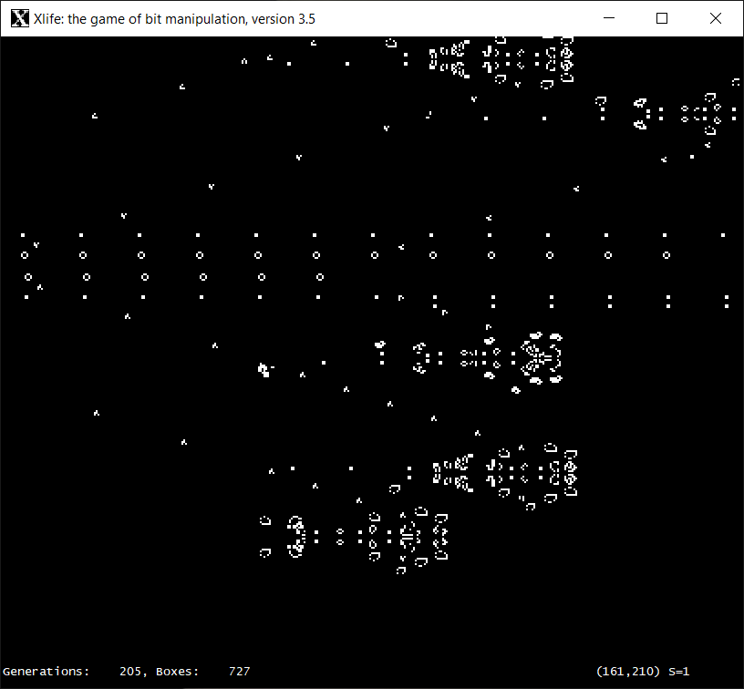

An executable and source code can be downloaded from Xlife's GitHub release page. This is a basic port, using a simple, custom X11 library to provide a user interface identical to the Unix original.Here is a screenshot of Xlife 3.5 in action:

Xlife 3.5 was written by Achim Flammenkamp, based on Paul Callahan's Xlife 3.0, which was in turn derived from Jon Bennett's Xlife 2.0. Xlife 3.5 is greatly superior to the more widely available Xlife 5.0, which is based on a different set of sources, and contains many bugs.
Since I have been asked about it, also here is W-Life, Glen Summers old port of Xlife 2.0 to Windows.